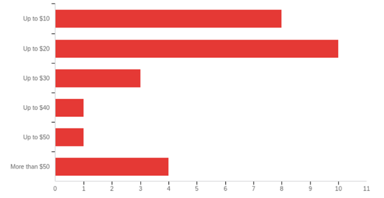
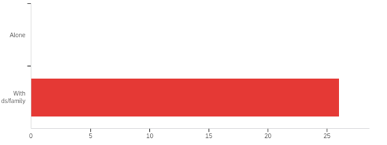
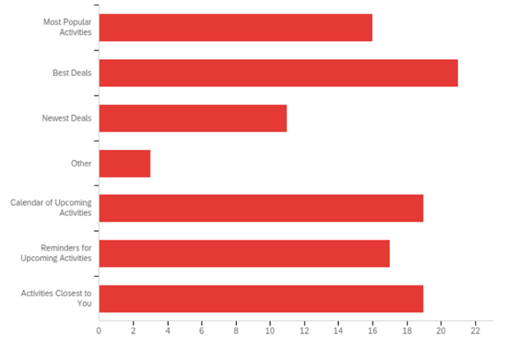
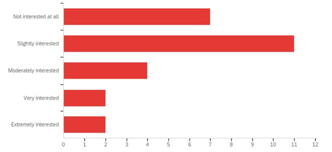
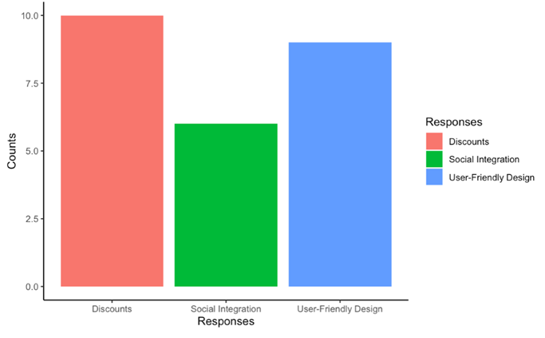
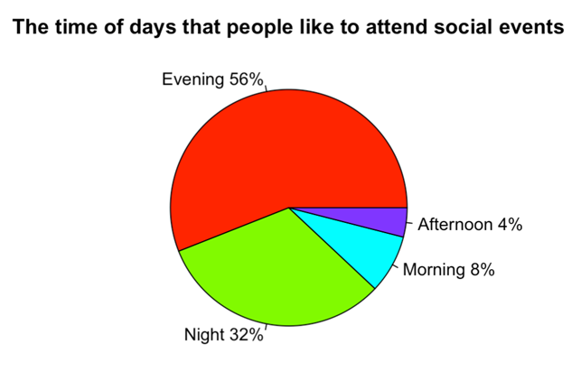

Elicitation Technique: Questionnaires
This questionnaire will provide a clear understanding of how a typical user will feel about this application and what they will expect from the application. There are many benefits to using a questionnaire. They are flexible, easy to distribute, and they effectively extract useful insights. [2]
Contributors
- Martin Vaughn – Team Lead
- Anita Achee – Chief Editor
- Kaylee Hartzog – Quality Assurance
- Joshua Rolph – Functional Manager
- Sengthay Kaing – Scrum Master
- Andrew Schimelpfening – Database Manager
Stakeholders and Customers
The stakeholder is Jordan Hamblin. We suspect the most interested customers will be young adults who are sociable and who frequently use a mobile device. This questionnaire is intended to either confirm or deny this assumption by gathering data on both respondent demographics and respondent interest.
Timeframe
The total time to plan, conduct, and report on this elicitation technique will be less than one week. The planning document will be completed by Thursday, April 30th. The conducting phase will begin the night of April 30th, and will be completed by the following afternoon, May 1st. The report will be drafted Friday afternoon, and will be completed by Saturday evening, May 2nd.
Collected Data
The data collected from this questionnaire will correlate three main attributes about each respondent. This includes respondent demographics, respondent interests, and respondent preferences. Correlating respondent demographics with respondent interests and preferences will allow for a clear understanding of which types of users are most interested, and what those most interested users will require within the application. [3]
Technique
Developing a Sample
Due to current world circumstances, the sample size for our questionnaire will be smaller than desired. However, there are “formulas for calculating minimum sample size” [1]. Based on statistical theory, a sample size of roughly 30 will be sufficient for consistent data.
The questionnaire will be delivered through social media, text messages, and emails. In order to get unbiased data, the sample needs to be random [4]. To ensure randomization, each of the six techniques contributors will find a list of 30-50 potential respondents (from one of the previously listed categories), shuffle the list, then blindly pick 5.
Organization of Questionnaire
Studies have shown that respondents are more likely to complete a questionnaire of short to medium length (3-5 pages) than a long questionnaire (7+ pages) [5]. Our questionnaire has been designed to be 3 pages long, to accommodate the 3 main categories listed in “Collected Data”.
A 2009 study found that in web questionnaires, respondents are most likely to complete a questionnaire that has close to 10 items per screen, with items split between multiple headers on each screen [6]. Thus, each questionnaire page will contain 10 items per with accompanying headers.
Developing the Questions
Keeping in mind the research under ‘Organization of Questionnaire,” we will develop the questions while making sure to avoid:
- Questions that lead the respondent
- Vague questions with interpretable meanings
- Open-ended questions
Emphasis will be placed on achieving overall questionnaire goals during question development. This means writing questions that gauge a respondent's interests such as what they expect the application to include, what features are most important, etc.
Questionnaire Steps
- Create questionnaire through Qualtrics
- Randomize a list of contacts
- Blindly choose 5 contacts.
- Send questionnaire to the 5 contacts (5 per each contributor, 30 total)
- Wait for response or request response
- Collect data into one location via Qualtrics
External Tools Used
The interview will be held over zoom.
Analyzing the Data
After performing the interview, we will go over the data that we collect and create a summary of what we learned. After we create this summary, we will email a copy to Jordan so he can review it and give any feedback that he wants.
Correlated Data
The questionnaire is divided into three sections. First is respondent demographics, second is respondent interest, and third is respondent preferences. Each of these sections contains 10 questions. Important questions and their corresponding graph are listed below. The remainder of the data can be found in the appendix.
Q6 - How much are you willing to spend at a social event?
Q9 - Do you prefer going to social events alone or with friends?
Q21 - What are some features you would expect to see in the Local Activity App?
Q25 - How interested would you be in creating your own activities for others to join?
Q29 - Would you rather users of the Local Activity App have a basic profile or be anonymous?

Free Response Questions Graph
Respondents made suggestions through 6 different free response questions. Many of those suggestions fell into one of three categories: Discounts, Social Integration, and User-Friendly Design. Total suggestion count listed below.
Social Events Preferred Times Graph
When asked about what time of day people like to attend social events, about 56% responded in the “Evening” and 32% responded at “Night”.
Respondent Demographics
Having given the questions, the users who answer our questions are from ten states. Most respondents were in Idaho, California, Arizona, or Utah.

Data Insights
There are several important features about this data which are worth noting. Almost all respondents had an interest in the application being free (Question 24). Most respondents were interested in the application being deals/discounts oriented (Q21, Q31, Q6). Users, aside from just wanting to meet new people, will also expect an overall cost benefit from using the application.
Another trend is that respondents expect the application to be simplistic and user friendly. Multiple requests were made in the free response questions to keep the application simple (Q18), to include friendly features like reminders (Q19), and to make the design fun and modern (Q17).
A third trend is that users expect the application to include social features and integrations. Respondents made requests to see which of their friends use the application (Q17), to see who is going to certain events (Q20), and to be able to invite friends to events (Q22).
Not a single respondent would prefer going to a social event without a friend/family member (Q9). Most respondents were interested in sharing the application with a friend (Q13). Most users will be interested in having at least a basic profile (Q29). While most respondents requested the app to be socially integrated, most were also either not interested at all or only slightly interested in creating their own events for others to join (Q25).
Conclusion
The data collected from the questionnaire shows that potential users for this app were most concerned with three main categories, as mentioned in the “Data Insights” section. First, people expect the app to save them money and to be free. Second, respondents want the application to be user-friendly and easy to use. Third, the app needs to be integrated with social media.
Recommended Features
Considering the three previously mentioned categories, we propose five features for the application. The first is a filter/sort feature on the main menu. Users would filter out activities that they are not interested in and find the ones they are. Users would sort events by price, location, most popular, etc. This corresponds with data that suggests user-friendliness and saving money for the user. Second is a subscription feature that would allow users to subscribe to a business or another user on the app. This corresponds with data suggesting user-friendliness and social integration. Third, a notification feature that would send out reminders about upcoming activities and best deals to make the app more user-friendly and savings oriented. Fourth, social media integration will encourage users to join activities if they see which of their friends are going. User profiles would be linked with social media profiles (like the app Mutual) to quickly verify who a user is and who their friends are. Lastly, a rating feature that would show users which activities are the most enjoyed. Higher ratings would increase users' confidence that an activity would be worth their time. This will correspond with social media integration, allowing users to see who enjoys activities most (like Yelp). We propose that the implementation of these features would make the app more user-friendly, more socially integrated, more cost beneficial for the user, and overall increase user interest.
A. Research Citation
-
Plumb, C. and Spyridakies, J., 1992. Survey Research In Technical Communication: Designing And Administering
Questionnaires. [Online] Available at:
- “Questionnaire Design Software.” SurveyMethods.com, 13 Aug. 2019, [Online] Available at: https://surveymethods.com/kb/questionnaire-design-software/
- Petra M Boynton, Trisha Greenhal, " Selecting, designing, and developing your questionnaire", Hands-on guide to questionnaire research, vol. 328, pp. 1312, 28 May 2004.
- Allan S. Mills, Seoho Um, Edward G. McWillian, Ronald W. Hodgson, “The Importance of Random Sampling When Conducting Visitor Surveys” Vol 5, No 2 1987. [Online] Available at: https://js.sagamorepub.com/jpra/article/view/1954
- Cynthia Iglesia and David Torgerson. “Does length of questionnaire matter? A randomized trial of response rates to a mailed questionnaire,” Sage Publications, vol. 5, no. 4, October 2000. [Online] Available at: https://www-jstor-org.byui.idm.oclc.org/stable/pdf/26749667.pdf
- Vera Toepoel, Marcel Das, “Design of Web Questionnaires: The Effects of the Number of Items per Screen.” vol.21, issue: 2, pp. 200-213, 1 May 2009. [Online] Available at: https://journals.sagepub.com/doi/pdf/10.1177/1525822X08330261